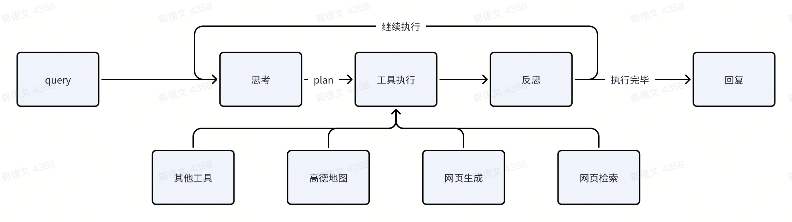

MCP工具调用系统
清小搭基于先进的智能代理（Agentic）架构，通过系统化的工具调用流程高效处理用户需求。该架构体现了AI系统从需求理解到问题解决的完整认知过程。
用户查询处理
系统首先接收并解析用户的具体问题或需求，这构成了整个问题解决流程的基础环节。
智能分析阶段
系统在接收用户查询后，进入多维度分析阶段：
- 需求理解：深入分析用户意图和核心诉求
- 策略评估：评估外部工具调用的必要性
- 方案设计：构建问题解决的技术路线
执行方案制定
基于分析结果，系统构建结构化的执行方案：
- 工具筛选：根据需求特征选择适用工具
- 调用编排：优化工具调用的时序安排
- 参数配置：完善工具调用的必要参数
工具调用执行
作为系统核心功能模块，清小搭提供多样化的工具支持：
核心工具类别：
- 高德地图服务：集成地理位置查询、路线规划、周边搜索等地图功能
- 网络信息检索：提供实时互联网数据获取能力
- 动态内容生成：支持智能化网页内容创建
- 专业服务集成：根据场景需求提供的特定功能服务
结果评估机制
工具调用完成后，系统进入全方位评估环节：
- 质量审核：评估工具调用结果的准确性和完整性
- 目标检验：验证用户问题的解决程度
- 优化决策：确定是否需要补充优化方案
迭代优化流程
评估阶段可能产生两种处理路径：
持续优化： - 对于未完全解决的问题，系统重启分析流程 - 根据反馈调整执行策略，按需补充工具调用 - 通过迭代循环确保问题得到完整解决
任务完成： - 当评估确认问题解决达到预期时，进入结果输出阶段
响应内容生成
系统最终将：
- 数据整合：系统化处理多工具调用结果
- 格式优化：构建清晰易读的输出格式
- 方案交付：提供专业、完整的解决方案

系统特性
- 智能迭代能力：采用动态迭代架构，持续优化问题解决方案
- 工具生态体系：整合多元化工具服务，满足多样化应用场景
- 系统化评估：实施全流程质量管控，确保服务效果
- 用户体验导向：始终以用户价值为核心，提供优质服务体验
通过这套系统化的工具调用框架，清小搭能够模拟人类专家的认知过程，通过分析、规划、执行、评估的闭环机制，高效解决用户的多维度需求，充分展现了现代AI系统的技术价值和实践意义。
应用场景
MCP工具调用系统当前主要应用于以下场景：导航路线规划、景点信息推荐、旅游行程定制以及实时资讯获取等场景。